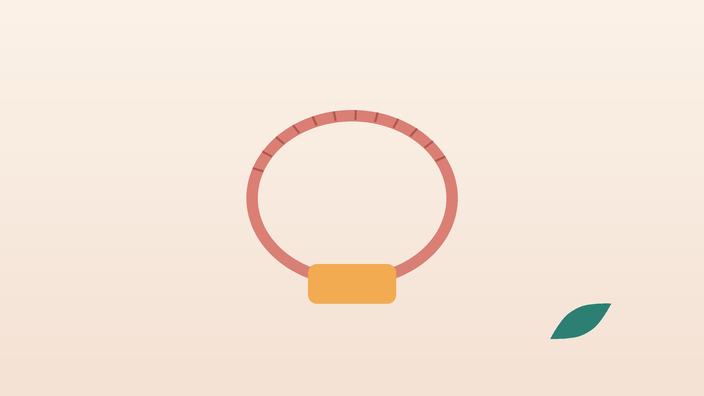

건강 칼럼 · 여성 건강 · 인천 갱년기 다이어트 한의원
폐경 전후로 뱃살이 늘었다면, 갱년기 다이어트 한방 관리

폐경 즈음, 이런 변화가 있나요?
- 먹는 양은 예전과 같은데 1~2년 사이 허리 치수가 늘었다
- 체중계 숫자보다 배와 옆구리 살이 먼저 눈에 띈다
- 계단을 오르면 허벅지가 금방 뻐근하고 근력이 줄었다
- 밤에 열감이나 땀 때문에 깨고, 다음 날 단것이 당긴다
- 예전에 통하던 식사 조절을 해도 잘 빠지지 않는다
- 오후가 되면 다리와 얼굴이 붓고 몸이 무겁다
이 체크리스트는 진단 도구가 아니라 상담이 필요한지 가늠해 보는 참고용입니다.
폐경 무렵 살이 찌는 이유는 무엇인가요?
미국 여성 건강 추적 연구(SWAN)에서는 마지막 생리를 2년쯤 앞둔 폐경 이행기부터 지방은 빠르게 늘고 근육량은 줄어드는 변화가 관찰되었습니다.
- 지방이 모이는 자리: 에스트로겐이 충분할 때는 지방이 엉덩이와 허벅지에 붙기 쉽지만, 줄어들면 장기 사이의 내장지방으로 옮겨 갑니다.
- 근육의 감소: 근육은 가만히 있어도 열량을 쓰는 조직입니다. 근육이 빠지면 같은 식사도 남는 열량이 되어 쌓입니다.
- 잠과 열감: 밤마다 깨면 식욕을 돋우는 호르몬은 늘고 포만감을 알리는 신호는 약해져 다음 날 간식이 늘어납니다.
여성의 복부비만은 대한비만학회 기준으로 허리둘레 85cm 이상입니다.
살찐 게 아니라 다른 병일 수 있는 신호
- 추위를 심하게 타고 피부가 건조하며 변비와 함께 체중이 늘었다 (갑상선 기능 확인)
- 배만 불러 오고 소화가 안 되며 금방 배가 부르다 (복수, 난소 질환 확인)
- 누우면 숨이 차고 양쪽 발목이 눌러서 들어갈 만큼 붓는다 (심장·신장 확인)
- 폐경 1년이 지난 뒤 다시 출혈이 비친다
- 우울감이 깊어 먹는 것으로만 버티거나 먹고 토하기를 반복한다
이런 경우 내과, 산부인과, 정신건강의학과 검사가 먼저입니다. 혈압약·당뇨약·갑상선약은 담당 의사와 상의 없이 끊지 마세요.
한의학은 갱년기 체중 증가를 어떻게 보나요?
한의학에서는 나이가 들며 신(腎)의 기운이 약해지고 음식을 기운으로 바꾸는 비위(脾胃)도 느려진다고 봅니다. 쓰이지 못한 영양과 수분은 끈적한 담음(痰飮)과 습(濕)이 되어 배와 하체에 고이는데, 이것이 '물살' 같은 뱃살로 나타난다고 해석합니다.
여기에 음액이 줄어 뜬 열이 잠을 깨우고, 스트레스가 기운을 막아 감정적인 식사로 이어집니다. 그래서 뱃살의 모양이 같아도 치료 순서는 사람마다 다릅니다.
내 갱년기 뱃살은 어떤 유형일까?
1. 담습(痰濕) 물렁한 뱃살형
- 이런 분에게 많아요
- 원래 소화가 약하고 몸이 무거운 분
- 나타나는 모습
- 배가 물렁하게 나오고 오후에 붓는다
- 함께 오는 몸의 신호
- 식곤증, 가래, 흐린 날 더 무거움
- 진찰에서 보이는 모습
- 혀가 두툼하고 잇자국이 있으며 설태가 끈적함
- 치료 방향
- 비위를 도와 고인 습과 담음을 걷어 내는 방향 (이진탕·평위산 계열)
- 오늘부터 해 볼 것
- 밀가루와 단 음료를 일주일만 줄여 붓기를 비교해 보세요.
2. 음허열(陰虛熱) 열감에 잠 못 드는 형
- 이런 분에게 많아요
- 폐경 직후 열감과 식은땀이 심한 분
- 나타나는 모습
- 잠이 부족한 날 야식과 단것이 늘어난다
- 함께 오는 몸의 신호
- 입 마름, 손발바닥 열감, 두근거림
- 진찰에서 보이는 모습
- 혀가 붉고 설태가 얇음
- 치료 방향
- 음액을 채우고 떠오른 열을 가라앉혀 잠을 돕는 방향 (산조인탕 계열)
- 오늘부터 해 볼 것
- 침실 온도를 낮추고 저녁 커피와 술을 끊어 보세요.
3. 기울(氣鬱) 스트레스로 먹는 형
- 이런 분에게 많아요
- 간병, 일, 가족 문제로 마음이 무거운 분
- 나타나는 모습
- 배가 고프지 않은데도 기분이 가라앉으면 먹는다
- 함께 오는 몸의 신호
- 한숨, 옆구리 결림, 짜증
- 진찰에서 보이는 모습
- 맥이 줄처럼 팽팽함
- 치료 방향
- 막힌 기운을 풀어 감정적인 식사를 줄이는 방향 (가미소요산 계열)
- 오늘부터 해 볼 것
- 먹고 싶을 때 바로 먹지 말고 5분 걸은 뒤 다시 생각해 보세요.
4. 양허(陽虛) 차고 처지는 형
- 이런 분에게 많아요
- 추위를 타고 기운이 없는 분
- 나타나는 모습
- 적게 먹어도 배와 허리가 차고 빠지지 않는다
- 함께 오는 몸의 신호
- 무기력, 잦은 소변, 아침 부종
- 진찰에서 보이는 모습
- 혀가 희고 맥이 깊고 약함
- 치료 방향
- 몸을 데워 대사를 받쳐 주는 방향 (실비음 계열)
- 오늘부터 해 볼 것
- 찬 음료 대신 따뜻한 물을 드시고 하체 근력운동부터 시작하세요.
한의원에서는 어떻게 진찰하나요?
- 체성분 검사: 체중보다 근육량, 체지방률, 허리둘레를 처음에 기록해 두고 변화를 비교합니다.
- 갱년기 증상: 마지막 생리, 열감과 수면 시간을 여쭙습니다.
- 심장·혈압·갑상선: 혈압과 맥박, 두근거림, 갑상선 질환과 녹내장 병력, 혈액 검사 결과를 확인합니다.
- 복용 약: 호르몬제, 혈압약, 수면제, 항우울제 등을 알려 주시면 확인해 처방합니다.
침·약침·한약 치료는 어떻게 하나요?
1. 침 치료
- 중완(中脘): 명치 끝과 배꼽을 이은 선의 한가운데입니다. 더부룩함과 식욕 조절에 씁니다.
- 수분(水分): 배꼽에서 위로 엄지 한 마디 너비 위입니다. 고인 수분을 돌리는 데 씁니다.
- 풍륭(豊隆): 무릎 바깥 아래와 바깥 복사뼈의 중간 높이, 정강이뼈에서 바깥으로 손가락 두 개 너비입니다. 담음을 삭이는 혈로 써 왔습니다.
- 삼음교(三陰交): 안쪽 복사뼈 가장 높은 곳에서 손가락 네 개 너비 위, 정강이뼈 뒤 가장자리입니다.
- 신문(神門): 손목 안쪽 주름의 새끼손가락 쪽 끝 오목한 곳입니다. 잠이 얕을 때 함께 씁니다.
2. 약침·온열 요법
뱃살이 몰린 복부와 붓기가 심한 하체 경혈에 약침을 시행하고, 차가운 아랫배에는 온열 요법을 더합니다. 허리·무릎이 아파 운동이 어려운 분은 진찰 후 추나 요법을 시행합니다.
3. 한약
체질 유형에 맞춰 탕약 위주로 처방합니다. 다이어트 한약에 흔히 쓰이는 마황은 에페드린 성분이 있어 식욕을 줄이는 쪽으로 작용하지만, 맥박과 혈압을 올리고 잠을 방해하며 가슴 두근거림을 부를 수 있습니다. 갱년기에는 이미 열감·불면·두근거림이 있는 분이 많으므로, 혈압, 심장 질환, 갑상선 기능, 수면 상태를 확인한 뒤 꼭 필요할 때만 적은 양으로 신중히 쓰고, 맞지 않는 분은 마황 없는 처방으로 대신합니다. 한약은 원장이 원내 탕전실에서 약재 선별부터 달이는 과정까지 직접 관리하며, 10일분씩 처방해 복용 경과를 보고 약재 구성과 양을 조절합니다.
한약은 운동과 식사 조절을 돕는 수단이며, 얼마나 빠질지는 몸 상태와 생활에 따라 달라 숫자로 약속하지 않습니다. 고혈압이나 심장·갑상선 질환 병력이 있다면 진료 때 꼭 알려 주세요. 확인 후 안전한 약재로 처방합니다.
원장님이 네이버 블로그에 진료 이야기와 건강 정보를 꾸준히 올리고 있습니다. 더 많은 이야기는 블로그에서 확인해 보세요.
블로그 보기관리는 어떤 순서로 진행되나요?
- 첫 진료 체성분 검사, 갱년기 증상, 혈압·복용 약을 확인하고 유형을 나눕니다.
- 처음 한 달 잠과 열감, 붓기를 먼저 다스려 식욕이 흔들리는 바탕을 잡습니다.
- 두세 달째 근력운동과 단백질 식사를 습관으로 붙입니다.
- 유지기 체성분을 다시 재어 근육과 허리둘레를 비교합니다.
기간은 진찰 후 사람마다 달리 정합니다.
갱년기 뱃살을 위한 생활 관리
- 근력운동 주 2회 이상: 세계보건기구(WHO)는 성인에게 주 150~300분의 중간 강도 유산소 활동과 주 2일 이상의 근력운동을 권합니다. 의자에서 일어났다 앉기부터 시작해 보세요.
- 끼니마다 단백질: 두부, 달걀, 생선, 살코기, 콩 같은 단백질 반찬을 손바닥 크기만큼 매 끼니 챙기면 근육을 지키고 허기도 덜합니다.
- 굶지 않기: 한 끼를 거르면 저녁 폭식으로 돌아옵니다.
- 잠 먼저 챙기기: 같은 시간에 일어나고, 침실은 서늘하게, 잠옷은 얇게 입어 밤중 열감에 깨는 일을 줄이세요.
다른 진료가 함께 필요한 경우
- 열감과 불면이 심해 일상이 힘들면 산부인과에서 호르몬 치료가 맞는지 확인해 보세요.
- 감정 때문에 먹는 일이 잦고 우울감이 있다면, 증상이 가벼운 경우 한약 치료를 중심으로 관리하기도 합니다. 우울감이 깊다면 정신건강의학과 치료도 함께 받으세요.
자주 묻는 질문 Q&A
- Q1. 갱년기에는 원래 살이 찔 수밖에 없나요?
- 몸의 구성이 바뀌기 쉬운 시기일 뿐, 근력운동과 식사, 수면을 챙기면 뱃살이 느는 속도를 늦출 수 있습니다.
- Q2. 굶으면 더 빨리 빠지지 않나요?
- 근육이 먼저 빠져 오히려 살이 다시 붙기 쉬운 몸이 됩니다.
- Q3. 유산소 운동만 하면 안 되나요?
- 걷기도 좋지만 이 시기에는 근육을 지키는 근력운동을 꼭 함께 넣으세요.
- Q4. 마황이 든 다이어트 한약은 위험한가요?
- 혈압, 심장, 갑상선, 수면 상태에 따라 맞지 않을 수 있어 확인 후 신중히 쓰거나 다른 처방으로 대신합니다.
- Q5. 호르몬제를 먹는 중인데 한약을 같이 먹어도 되나요?
- 드시는 호르몬제 이름을 알려 주시면 확인한 뒤 처방합니다.
- Q6. 뱃살만 골라 뺄 수 있나요?
- 한 부위만 빼는 방법은 없고, 체지방 전체가 줄 때 뱃살도 줄어듭니다.
- Q7. 몇 kg 빠지는지 알 수 있나요?
- 사람마다 달라 숫자로 약속하지 않으며, 체성분 검사로 근육과 지방의 변화를 함께 확인합니다.
- Q8. 집에서 해 볼 만한 지압이 있나요?
- 식후 더부룩할 때 중완혈을 손바닥으로 둥글게 문질러 보세요. 식사 직후 세게 누르지는 마세요.
문원열 대표원장한의사 · 365스마일한의원
임상 경력 15년, 인천 서구 가정동에서 개원 후 10년째 진료하고 있으며, FCST 턱관절학회·연부조직학회·침도학회 등에서 활동합니다. 아픈 곳만이 아니라 증상의 원인을 찾아 진료합니다.
진료 안내
- 진료시간
- 평일 09:00~20:00 (점심시간 13:00~14:00, 접수 마감 19:30)
토·일·공휴일 09:00~15:00 (접수 마감 14:30) - 주소
- 인천광역시 서구 가경주로 46, 2층 (가정동)
인천2호선 가정중앙시장역 인근
영상으로 길 안내 보기 → - 주차
- 한의원 건물 바로 앞 1층 도원주차장
- 예약
- 예약 바로가기 또는 전화 예약
진료시간은 사정에 따라 바뀔 수 있으니 방문 전 전화로 확인해 주세요.
함께 읽으면 좋은 칼럼
건강 칼럼 전체 보기 →


참고 자료
- Greendale GA, et al. Changes in body composition and weight during the menopause transition. JCI Insight, 2019 (SWAN 연구)
- 세계보건기구(WHO). Guidelines on physical activity and sedentary behaviour, 2020
- 대한비만학회. 비만 진료지침
- 질병관리청 국가건강정보포털 — 원문
※ 이 글은 일반적인 건강 정보이며, 개인의 상태에 따라 치료 방법과 결과는 다를 수 있습니다. 정확한 진단과 치료는 진료를 통해 결정됩니다. 침·약침 시술 후 드물게 멍, 통증 등이 생길 수 있습니다.